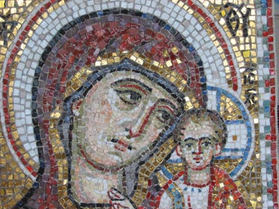

Master
Gallery
Mosaics and Murals
Sketches
The art of mosaic
History
Modern teckniques
The art of fresco
History
Modern teckniques
Miscellany
My travels
Material
Contacts
Home
Site map
Contacts
Links

Mosaic detail
Mosaic "Our Lady of Kazan" on the entrance gates of the Vvedensky Optina Monastery, 2005
Size: 47:54
Technique: direct method
Material: smalti, gold smalti
Designed and made by the artist
Back to hall
Other photos:
[1]
[2]
[3]
[4]
[5]
[6]
[7]
[8]
[9]
[10]
[11]
[12]
[13]